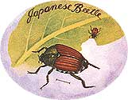

GARDEN &YARD
The Battle of the Beetles.
In my last article I covered eight of the 17 insects that have made themselves known to me by damaging crops in my garden. Though this is the second in a two-part series, I must go over the philosophy and some basic facts that I believe should guide every gardener. Without this, a discussion of insects has the potential for becoming a handbook for war, "There are bugs in my garden! They must be eating my babies! Kill! Kill! Kill!"
In 25 consecutive gardens in the same spot I can't recall ever having a crop completely wiped out. Sure, I got a lot less turnips than I planted one year, but I had planted too many anyway. We never would have eaten the crop that 100 feet of turnips would have yielded. The aphids did me a favor by cutting the harvest down to something much more reasonable.
I ran out of potatoes in January this year. In a good year I have enough potatoes left in the spring for the next planting. It was rodents rather than insects that damaged that crop, and I do need to figure out a way to deal with them. I'm currently trying to befriend a homeless cat that has been hanging around the house. I hope by providing it milk it will provide some mouse and mole control. But back to insects.
I want to do everything possible to get people to think positively about insects. The vast majority of them are, at worst, benign. Consider this quote from my favorite insect reference book:
No one knows exactly how many kinds of insects there are, and figures vary widely even on the number already described. The fourth edition of Destructive and Useful Insects (Metcalf, Flint, and Metcalf, 1962) gives 686,000 as the estimated number of described living species of true insects with perhaps 100,000 of these in North America. A Field Guide to the Insects (Borror and White, 1970) gives 88,600 as the number of species in North America north of Mexico and estimates that perhaps 1,000 insects may be found in any fair-size backyard.
Relatively few insects-probably not more than a tenth of the total number-can be designated as public enemies. The rest are either harmless or decidedly beneficial. Without insects, life as we know it today would not exist. We depend on insects for pollination of 85 percent of our fruit and many of our vegetables. They play a large role as scavengers. They provide food for birds and fish. They give us honey and wax, shellac, cochineal, and silk, and they have a minor role in surgery and medicine. Practically every insect order contains some useful species that live on destructive insects.
It is only within the last 30 years, when some chemicals have reached such a high degree of nonselective efficiency, that we have learned the extent of the role played by parasites and predators in reducing harmful insects and mites. (See The Gardener's Bug Book, Fourth Edition, by Cynthia Westcott, Doubleday & Co, Inc., 1973).
If there are roughly 1,000 different insect species in the neighborhood of my garden, and only 17 of them have attracted my attention by eating my vegetables, then the percentage of potential problem insects is 1.7. To focus the majority of the attention on these few insects is a distortion of the real world. It is a gross misrepresentation. It is like being afraid of going to a city because all you ever hear about is all of the bad things that happen to people.
I actually look upon that small percentage of species of insects that eat garden plants as the most important. After all, they care about the same thing I do. What possible good could a mosquito be to a garden? Mosquitoes don't care about plants. The number of mosquitoes in my garden tells me nothing about the health of the garden. And it would take a tremendous number of them to add anything to the soil. Their greatest value may be in telling me when it is time to leave the garden in the evening.
Aphids, on the other hand, send me an important message. When there is an aphid infestation on a row of plants, I know that the plants are under stress. The aphids are not causing the stress. They are indicating that there is stress, something they can sense that I can't. The plants look fine to me.
Consider another indicator-the oil light in a car. When this warning light comes on, you know that there is a problem that must be attended to right away. You pull into a garage and tell them the oil light is on. They reach behind the dash and pull out a little light bulb. Showing it to you they say, "There, this won't come on again:' And you are on your way, right? Yeah, right, but not for very long because, of course, the bulb was not the problem. It was indicating a problem in the engine, a problem that if not fixed soon, will develop into a larger problem.
We should look upon insects that eat our vegetables as indicators of a larger problem. The problem might be that we planted a particular crop too early, and it is struggling in soil that is too cool for it to grow vigorously. Or the trouble may be too much or too little water. But it is usually an imbalance in soil nutrients, either too little or too much of one of the 17 elements necessary for the healthy growth of most plants.
In my previous article I dealt mostly with Lepidoptera. These butterflies and moths lay eggs on plants, that hatch into caterpillars. The caterpillars eat until maturity, are transformed into a pupa, and then molt to become a winged insect again.
Most of this article will be about beetles. Beetles also fly and lay eggs. The eggs hatch into grubs, and it is in this phase that they gain the most weight. However, adult beetles also eat and are sometimes a greater problem than the grubs. The Japanese beetle probably springs to mind for many. I remember handpicking Japanese beetles from our grape arbor in New Jersey when I was growing up. While I have seen a few in my garden from time to time, they are not much of a problem in Maine. I have seen traps out for them, so I guess they are bothering some people.
I'll start with the smallest: flea beetles. I wasn't sure how that should be spelled at first. They are hardly bigger than a flea but when you approach them, they flee. This quick movement makes it impossible to handpick them, so you can rule that out as a control method.
I have observed damage from flea beetles on baby plants and transplanted seedlings of tomato, pepper, eggplant, potato, radish, broccoli, cabbage, cauliflower, kale, cucumber, and squash. They make small holes in the leaves. In the case of transplants like tomatoes, peppers and eggplant, I often feel they are doing me a favor by cutting back the leaf mass to help put it in balance with the roots that were damaged during the ordeal of transplanting. The damage to the young cucumber and squash plants is minimal. It probably only occurs when the seeds germinate early and the warm weather that allowed them to do so is followed by cold weather that causes the plants to grow very slowly, if at all. If slow growth continues for too long, the beetles will severely damage the plant, but warm weather usually returns in time to promote vigorous growth that quickly overwhelms the damage.
There are only three plants that suffer significantly from flea beetles-radishes, broccoli, and cauliflower. The radishes always make it in the end, but the first couple of plantings attract so many flea beetles that I usually expect them not to survive. Broccoli and cauliflower directly seeded in the garden have had their baby leaves completely eaten. At least I think it was flea beetles. One day I had a foot-long row of inch-high seedlings with flea beetles poking holes in the tender leaves. The next day there were just stems. It could be that something else came along in the night, or it could be that I ignored the plants for more than overnight, but damage to these seedlings by flea beetles has been enough in successive years for me to change my practices. Flea beetles like this crop a lot, and the best way for me to get broccoli and cauliflower is to start the seedling in flats.
The frustrating thing is that I used to plant short rows, just a foot for each, and then transplant from these short rows.
As a lazy gardener, I try to plant in the garden whenever possible and let nature take care of water, light, and nutrients. The flea beetles made it necessary for me to replant, which was more work. I could cover the seedbed with gauze, but that was another thing to worry about. I finally reached the conclusion that the easiest way to get broccoli and cabbage seedlings started was to grow them in a small flat. I do have to water it even if I leave it outside, because the soil in a flat dries out much faster than garden soil. Also, the garden soil can pull moisture from below, but the flat can't. I rationalize that the extra effort of watering is balanced by the easier task of transplanting from a flat rather than from a garden seedbed.
The flea beetles go after the transplants, of course. The trick is to make the transition easy enough so the plants have a minimal setback. By taking care that the roots are not severely damaged, that the soil is in good contact with the roots, and that the plants get plenty of water, the transplants will start growing vigorously enough to outpace the flea beetle's feeding.
Interestingly, flea beetles are around all summer and go through a couple of generations in our climate, yet I am only aware of them in the spring. Another fascinating thing is that I have never been aware of their larval stage. Since their larval stage in not mentioned in any of my reference books, I guess it isn't important, but it is still interesting because beetles do most of their growing in the larval stage. Once it becomes a beetle, it is fully grown. Flea beetles are 1/10-inch long, and their eggs are minuscule. It is going to take a lot of them to make a big difference.
If you have some plants that appear to be losing the battle against flea beetles, you can literally shoo them away and use gauze or an agricultural row cover. The row cover has the added advantage of warming the soil, which will probably help the plants grow more vigorously. I have done this with cucumbers and squash. I think flea beetles are most often an indicator that I am trying to grow a plant in soil too cold for it.
There is no soil too cold for asparagus, because it is a perennial. The crowns send up shoots from a foot or so deep in the ground when the temperature or the soil or some cosmic signal tells it to. Since I exercise no control over the growth of this plant, I take no credit or blame for timing. There are two kinds of asparagus beetle: asparagus beetle and spotted asparagus beetle. They are both slender beetles, about 1/4"-inch long, and have spots. The regular asparagus beetle is black with yellow spots, and the spotted one is orange with black spots. I don't have problems with either of them. Actually, they are kind of attractive on the plants. There may be a few around while I'm harvesting and may eat a little of the head of the asparagus, causing it to be bent or look chewed up. That is not good for market, but it doesn't bother me. When I sold asparagus I don't recall ever having to hold out any to make the bunches perfect.
The beetles come in greater numbers after I have stopped my harvest and the plants are maturing into ferns. I suppose the foliage they eat may decrease the plants' ability to store energy in the crown, which may decrease the crop the next year. They have never completely defoliated a plant, so I have not given them any concern.
Cucumber beetles have caused delays in my first cucumber of the year. Some may think that because I have had to replant broccoli or cucumbers I should call it a crop loss to insects. There have been years when, if I had not replanted, I would not have had broccoli or cucumbers. But I did replant. The damage was done very early in the season, so there was plenty of time to do the job again. Being lazy, I would rather not have to do the job again. Being competitive, I would rather have the crop come in as early as possible. Being philosophical, I accept what is and go on from there.
Cucumber beetles are about the same size and shape as asparagus beetles. There are striped and spotted varieties. The spotted is greenish yellow with black spots. The striped, the one I am most familiar with, is yellow with three black stripes. It starts flying in the spring before the cucumbers or squash have sprouted. When their favorite crop appears, they will do some eating of the leaves, but this damage is minimal. What really hurts is if they lay eggs on the ground under the plant or on the stem at ground level. When the eggs hatch, the thin, white wormlike larvae feed on the roots. Since this is hidden from view, it goes unnoticed until it is too late to do much other than plant again. In 25 years of gardening, I can only recall having this problem once. I kept looking at the cucumber plants, and they just weren't doing much of anything-virtually no growth. I planted another hill, leaving the first for observation. Ultimately this plant grew enough to have some flowers and cucumbers, but its output was not worth the effort of tending it.
I usually let nature take its course, meaning that I plant and observe what happens. There have been some years that I have put gauze over the hills of cucumbers and squash. This really is a pretty good idea for several reasons. It will act as a barrier to cucumber beetles and flea beetles. It will also warm the soil several degrees above the temperature of uncovered soil, which helps these warm-loving crops. Covering a hill is really about the easiest plant protection I can think of. If the hill is I foot in diameter, a 2-foot square of gauze will cover it. The edges of the gauze can be covered with soil, or the corners held down with stones. The plants will be protected until they get their first true leaves. At this point, they should be strong enough and the weather warm enough so that the plants can out grow any damage from insects.
Now a little pride (I hope not arrogance) creeps in. Seldom have I used this preventative measure and seldom have I had a problem. If I use the gauze, I can't prove my plants are so healthy that they won't attract cucumber beetles. As for whether or not the beetles are in the vicinity consider this: "...woodlands near the vegetable garden, under leaves or rotting logs, in lowland hedgerows, or near wild food plants such as goldenrod and aster..." This is actually a description from The Gardener's Bug Book of the winter habitat for stripped cucumber beetles. It is as close a description of the land around my garden as I could give.
I see cucumber beetles in the garden all summer long. They don't eat much. I handpick them if they are conveniently located and I'm in the mood. They are somewhat cagey though, and frequently fly at my approach. They are blamed for spreading bacterial wilt and cucumber mosaic. My cucumbers and squash occasionally get some late disease. I haven't bothered to figure out what it is because it comes so late in the season that I really don't care much. I'm not even certain it is a disease, though it probably is. At first I thought the plants had just reached maturity and were dying of old age. I am obviously not a good one to talk to about plant diseases, since my motto is "Ignore it. Maybe it didn't happen."
There is one beetle in my garden that is difficult to ignore. The Colorado potato beetle is hard-shelled, very broad (3/8" x 1/4 inches), very convex, and yellow with 10 longitudinal black lines. It is a perfect example of a native insect that suddenly became dangerous to cultivated plants. For many years this beetle lived on the sandbur weed on high plateaus at the base of the Rocky Mountains. It was described in 1824 and had probably been around as an obscure beetle for a long time. But the pioneer settlers of the West brought with them the potato, which the beetle found much to its taste. In a short time this almost unknown insect became, under the title of "potato bug," the best-known insect in America. It migrated eastward at the rate of about 85 miles a year, following potato plantings, appearing in Nebraska in 1859, Illinois in 1864, Ohio in 1869, reaching the Atlantic coast by 1874. Eventually it made its way to Europe, where it is well established in France, Holland, Belgium, Spain, parts of Italy, and in other countries. It appeared in England but was eradicated there. It is now a problem throughout the United States except in parts of Florida, Nevada, and California.
The Colorado potato beetle humbles me. I have to admit that it has come to my garden in numbers that can defoliate plants. I have to admit that it comes in worrisome numbers more often than not. But I have some experiences that support my belief that healthy plants in a healthy soil do not attract insect pests. One year a woman dropped by to ask if I could show her what a potato beetle looks like. It was perhaps my best year for potatoes. The rows were at their peak of growth and though I had not done anything to discourage them, there were no signs of potato beetles. I looked down the rows and saw one plant that looked smaller than the rest. I went to it, pulled back the leaves exposing the undersides, and sure enough found three clusters of beetle eggs to show my guest. Some more looking and I was able to show her a couple of adult beetles.
After she left, I went back to the potatoes and checked more plants. The rest were free of any egg clusters.
Another year I planted potatoes in the market garden, not because I was planning to sell them, but because potatoes are said to like new soil. One day, when the plants were nearing full size, I pulled back several to check for egg clusters. They seemed to be averaging about one cluster per plant. I was too busy at the time to pick eggs from 200-foot rows and I never got back to them. To my amazement I never saw any grubs or any damage to the plants. I can't imagine that I checked the only plants with egg clusters, but if there were more, why didn't they hatch?
Those two years were exceptions. It would seem more reasonable to attribute the paucity of beetles to a fluctuation in their population in the area, probably due to the weather. I have concentrated on the soil for potatoes many years, hoping that I would get it just right and there would be an exceptional year that I could attribute to my husbandry of the soil. Perhaps mulching with leaves would be the secret. Perhaps planting in new soil. Perhaps rotating alter corn, a grass. Perhaps planting next to beans, a companion crop. My quest continues. As a Taurus, I don't give up easily.
In the meantime, how do I get a crop? Until recently there was only one control that I found acceptable: handpicking. This is an honorable practice and reasonable in a garden. Before chemicals it was also the only practice for a farmer. To control potato beetles by handpicking, you need to know a little bit about them. First, the adults pop out of the ground about the same time the plants do, if you are planting as early as possible. Planting later is one way to decrease their damage. The beetles that over wintered in or near your garden may fly away in search of food if they don't find it to be handy.
The adults fly around looking for each other and for a good place to lay eggs. They eat a little but not enough to be a problem. They may be tasting plants to make sure they have found a good one for their offspring. They lay eggs on the underside of leaves of potato plants or other members of the same family (eggplant, tomatoes, and deadly nightshade). The egg clusters are bright yellow-orange and a good size for crushing between thumb and forefinger. The eggs hatch in four to seven days-very important. The difference, as you might imagine, is caused by the air temperature: Handpicking is best done before the eggs hatch, which means that the plants should be checked once a week in cool weather and every four days when it is hot and humid and you don't feel like doing it.
When the eggs hatch, a small brick-red grub (about the size of a pinhead) emerges and heads for the top of the plant, where the most tender leaves are emerging. Not all of the bugs make it to the top. Some will eat pretty much where they started. Others will end up heading out toward the ends of leaves and stems other than the main one. The result is that instead of crushing them all with one pinch, you now have a dozen or more individual bugs to hunt down in various locations. They go from pinhead size to the size of adult beetles in about two weeks. To get to this size requires a lot of eating-not particularly good for the plants. The bigger the grubs get, the messier they are when squeezed, as you might imagine.
I tried to entice my children into picking potato beetles. I couldn't very well pay them for the number of crushed egg clusters-who could count them? The kids could pick the grubs, and then we could weigh or count them, but that seemed like a bore-plus, it took away the incentive for removing the clusters before they got out of hand. Then I hit upon the scheme of offering $50 to keep the plants free of grubs. I would check every week and deduct a nickel for each grub or cluster I found. And I would give them a couple of hours notice before I checked. I guess I didn't present it properly because I never interested either Josh or Caitlin in this enterprise. It was my plan from the beginning to never turn my children off to gardening by making it a place of unpleasantness, so I couldn't force them to do the job.
My own handpicking worked pretty well most years. I would be fairly diligent when the timing was once a week. It didn't take too much effort to travel up and down the rows, pulling the plants back to expose the undersides of the leaves. The yellow-orange clusters are easy to spot and a pinch crushes the eggs. Heat and humidity slow me down just when the eggs start hatching faster. At about this time the plants are in flower and growing so vigorously that I feel they may be able to take care of themselves. There have been some years when some plants were completely defoliated. I have no doubt that the harvest has been diminished because of the beetles. However, most years I have harvested the three or four bushels we need to get through the winter.
Two or three years ago a new strain of Bt (Bacillus thuringiensis var. san diego) was developed. This is a bacterial disease that will kill Colorado potato beetle larvae and nothing else. While I think the precautionary advice on the label (that it be kept out of the reach of children, that contact and inhalation be avoided and that it be kept out of lakes, ponds, or streams) should be followed, I feel much more comfortable using it than I would any chemical insecticide. I find this insecticide acceptable for use in my garden primarily because it does not kill innocent insects. However, whenever I use it, I recognize that I have not yet found the real problem. I am pulling the warning light bulb rather than fixing the real problem.
Cynthia Westcott says the Mexican bean beetle is "doubtless the worst enemy of eastern home vegetable gardens." It has not been so for me, but I'm not going to take any credit for this one. I haven't heard other Maine gardeners talk much about this relative of the lady beetle, so I suspect that it just doesn't like our weather very much. Like the Colorado potato beetle, the Mexican bean beetle spread across the country from Mexico. I have had it visit my garden. There might be one or two hatches in the whole bean patch. Only one year were there enough to merit my attention.
The Mexican bean beetle is about the size of the potato beetle and the shape of a ladybug. It is a metallic yellow to tan with eight black spots on each wing. Like the potato beetle, it is the grub that does the most damage. The grub is yellow with what the books call spines. I call it fuzzy. It eats from the bottom of the leaf and turns leaves into lace. It will also eat the beans, which makes it even more of a pest. Egg dusters and the grubs can be handpicked or crushed. Both are found on the undersides of the leaves.
There are no sprays for this beetle that will not kill more innocent insects than guilty ones. Some reference books say that there are resistant varieties, though I have found little evidence of such resistance. Organic Plant Protection, edited by Roger B. Yepsen, Jr. (Rodale Press, Inc.), suggests a number of companion plants that may keep the beetle away. One of those is potatoes, and I always plant potatoes and beans next to each other. That may have something to do with my lack of Mexican bean beetles, but I doubt it. This book also mentions some home-concocted sprays involving wormwood, garlic, mint, matricaria, wild morning glory, and cedar. I think anything is worth a try, but I am loath to pass on any home remedy that has not been properly tested. That is not to say that we have to get scientists involved. We have to be willing to keep a control factor in our tests. In other words, if we are going to spray garlic juice, we should only do so on half the plants. If it seems to do some good, we need to test it again in another year, again with a control.
That's it for the beetles that have done damage in my garden. Lest you are down on beetles, remember that the best friend we have is a beetle. Ladybugs have a voracious appetite for aphids and scale insects. Adult ladybugs will eat about 50 aphids a day. In the larval stage they eat about 25 aphids a day. A single larva has been known to consume 90 adult and 3,000 larval-scale insects during its lifetime. Don't ask me who counted them.
I don't think I would buy ladybugs unless I was trying to repopulate an area where a lot of spraying had been done. The problem with bringing them in from somewhere else is that they may not have enough to eat, in which case they will either fly away or die. Better to keep from interrupting the natural balance in and around your garden. If there are a lot of aphids in your garden one year, there is a good chance that a ladybug will find out about it and decide your garden is a good place to start a family.
The squash bug is the only true bug that calls attention to itself in my garden. While we think of most insects as bugs, entomologists are more selective. Their bugs have some specific traits like front wings that are leathery and back wings that are membranous. Bugs have a gradual metamorphosis with the nymphs looking like adults without wings.
The squash bug is shield-shaped, and if you have ever squashed one you probably remember the smell. The eggs are laid on the undersides of leaves and are hard to squash. I usually get a hatch or two on my summer squash fairly late in the season. By the time I see them, the nymphs are usually nearing their last of the five molts they go through before adulthood. There are usually a lot of them in the same place often on the same leaf. I just clap the leaf between my hands and squash most of them in one impulsive move. The smell doesn't bother me. If they were more of a bother, I would probably look for the eggs, which hatch in seven to 14 days.
Squash bugs probably get on my winter squash, but there is such a tangle of vines and no need to get involved with them on a regular basis that I don't see them. They inject a poison into plants they feed on, which causes leaves to turn brown. It may be that some of the times I thought I had a wilt of some kind, it was squash bugs.
Root maggots and leaf miners are both the larval stage of a fly. Leaf miners hatch from eggs on the undersides of leaves. The maggot gets in between the top and bottom layers of the leaf and feeds there. Even if you wanted to use a poison, it wouldn't affect a leaf miner, at least not until the damage was done. The damage shows up as mottled leaves or light patches. I have had them in spinach, Swiss chard, and beets, all of the same family, so it is probably the same fly.
In the case of root maggots, the fly lays its eggs at the base of the plant. When the egg hatches, the maggot digs in, feeding on the root. If it is a root crop like radishes, turnips, carrots, or rutabagas, you will see the damage at harvest. Radishes are in the ground such a short time, the maggot is likely still there in the radish. Root maggots in the roots of cabbage may retard the growth of the plant, or it may wilt and even die. In any of these cases, if there is a lot of damage to root crops or if other plants wilt, take it as an indication that the plants are under stress.
I remember having a debate about organic methods with a commercial vegetable grower. At one point he asked what I did about root maggots on radishes. "I grow healthy plants in a healthy soil. I don't have root maggots."
"My plants are healthy," he retorted. "Dave," a friend of his piped in, "you don't have any earthworms in your soil."
"What's that got to do with it?"
"That's what he's talking about. Healthy Soil has earthworms."
|
Flea Beetle |
Asparagus Beetle |
Mexican Bean Beetle |
|
Cucumber Beetle |
Eggplant Flea beetle (Epitaix Xuscula). |
leaf miner tunnels on a forest leaf. |
|
 The Battle of the Beetles |
Flea Beetle |
Asparagus Beetle |
|
Cucumber Beetle |
The Dreaded Potato Beetle |
Mexican Bean Beetle |
|
Squash Bug |
Root Maggot and Leaf Miner |
|